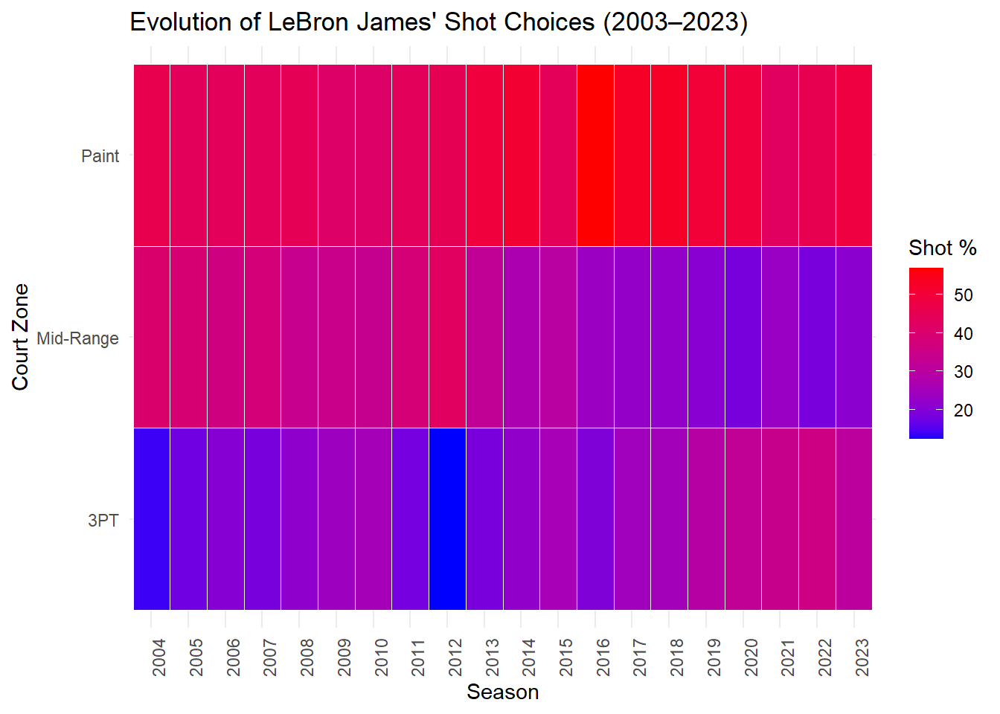
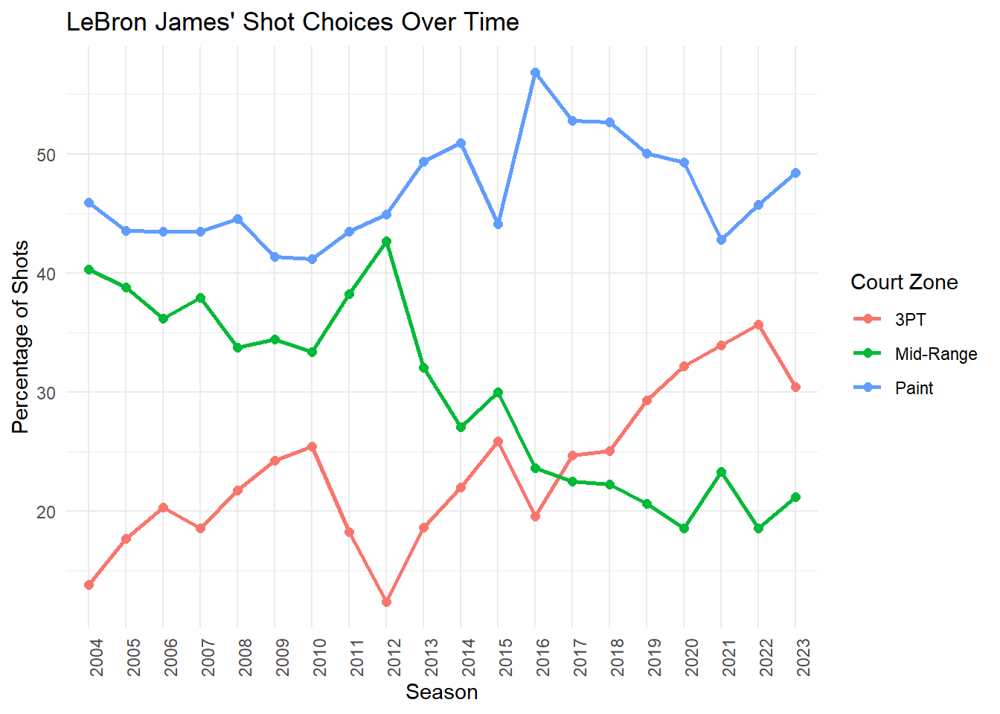
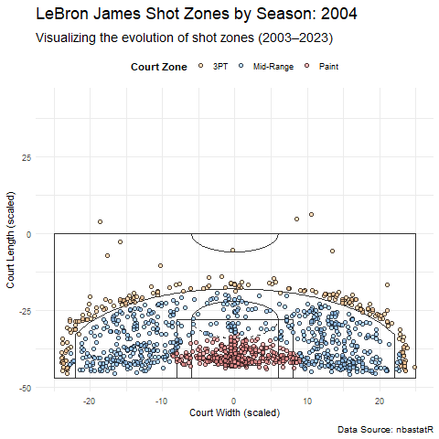

# Load required libraries
library(tidyverse)
library(BasketballAnalyzeR)
library(nbastatR)
library(ggimage)
library(cropcircles)
library(ggtext)
library(glue)
library(janitor)
library(htmltools)
library(gganimate)This is an exploratory data analysis of Lebron James’ shots over the last 20 years (2003-2023)
Why the focus on Lebron James you may be wondering? Well, its pretty simple:
- He’s arguably one of the greatest basketball players the world has ever seen (its a race between him and Michael Jordan for the top spot)
- As of 2023, he is the NBA’s all-time leading scorer, surpasing Karim Abdul Jabbar
- I’ve been a Laker’s fan , and Lebron will go down as one of the Laker greats, like Kobe Bryant, James Worthy and Magic Johnson.
The key question we’re trying to answer is whether Lebron’s shot choices have also evolved, as the league has evolved? As the league has shifted to more 3-PT shooting, has Lebron also adjusted his shot choices accordingly?
We’re going to explore this shot evolution in the following steps:
Data Acquisition:
Retrieve LeBron’s shot data for all seasons (2003–2023).
Filter the data to include only LeBron James.
Data Preparation:
Add a column for
season.Categorize shots into specific court zones (e.g., 3PT, mid-range, paint).
Summarize the frequency of shots taken from each zone by season.
Visualization:
- Create a heatmap or faceted plots to show changes in shot frequency by court zones over time.
1 Load the required libraries
2 Customization for large datasets
# Increase connection size for handling large datasets
Sys.setenv(VROOM_CONNECTION_SIZE = 500072)Environment Settings: Ensures a large enough connection buffer to handle the data.
3 Data acquisition
# The goal here it to get shot data for all LBJ teams from 2003 to 2023
# Using a for-loop for each team and season lebron played in
# Team 1: Starting with the Cleveland Cavaliers
# Initialize an empty list to store shot data for each season
all_shots_cc <- list()
# Loop through each season from 2003 to 2010
for (season in 2003:2010) {
# Fetch shot data for the current season
season_shots_cc <- teams_shots(team_ids = 1610612739, seasons = season)
# Append the data to the list
all_shots_cc[[as.character(season)]] <- season_shots_cc
}Cleveland Cavaliers 2002-03 shot dataCleveland Cavaliers 2003-04 shot data
Cleveland Cavaliers 2004-05 shot data
Cleveland Cavaliers 2005-06 shot data
Cleveland Cavaliers 2006-07 shot data
Cleveland Cavaliers 2007-08 shot data
Cleveland Cavaliers 2008-09 shot data
Cleveland Cavaliers 2009-10 shot data# Combine all cav seasons data into a single data frame
shots_cc <- bind_rows(all_shots_cc)
# Team 2: Miami Heat
all_shots_mh <- list()
# Loop through each season from 2003 to 2010
for (season in 2011:2014) {
# Fetch shot data for the current season
season_shots_mh <- teams_shots(team_ids = 1610612748, seasons = season)
# Append the data to the list
all_shots_mh[[as.character(season)]] <- season_shots_mh
}Miami Heat 2010-11 shot data
Miami Heat 2011-12 shot data
Miami Heat 2012-13 shot data
Miami Heat 2013-14 shot data# Combine all miami seasons data into a single data frame
shots_mh <- bind_rows(all_shots_mh)
# Team 3: Back to the Cavs
# Initialize an empty list to store shot data for each season
all_shots_cc2 <- list()
# Loop through each season from 2015 to 2018
for (season in 2015:2018) {
# Fetch shot data for the current season
season_shots_cc2 <- teams_shots(team_ids = 1610612739, seasons = season)
# Append the data to the list
all_shots_cc2[[as.character(season)]] <- season_shots_cc2
}Cleveland Cavaliers 2014-15 shot data
Cleveland Cavaliers 2015-16 shot data
Cleveland Cavaliers 2016-17 shot data
Cleveland Cavaliers 2017-18 shot data# Combine all cavs seasons data into a single data frame
shots_cc2 <- bind_rows(all_shots_cc2)
# Team 4/Current Team: The LosAngeles Lakers
# Initialize an empty list to store shot data for each season
all_shots_ll <- list()
# Loop through each season from 2015 to 2018
for (season in 2019:2023) {
# Fetch shot data for the current season
season_shots_ll <- teams_shots(team_ids = 1610612747, seasons = season)
# Append the data to the list
all_shots_ll[[as.character(season)]] <- season_shots_ll
}Los Angeles Lakers 2018-19 shot data
Los Angeles Lakers 2019-20 shot data
Los Angeles Lakers 2020-21 shot data
Los Angeles Lakers 2021-22 shot data
Los Angeles Lakers 2022-23 shot data# Combine all laker seasons data into a single data frame
shots_ll <- bind_rows(all_shots_ll)
# Combine all shots data frames above into one main data frame (to rule them all, haha)
shots <- rbind(shots_cc, shots_mh, shots_cc2, shots_ll)
# Filter only LeBron James' shots
lebron_shots <- shots |>
filter(namePlayer == "LeBron James") |>
mutate(season = as.factor(yearSeason)) # Add a season column….
4 Data preparation
4.1 Let’s now categorize his shots by court zone
# Define zones based on shot locations
lebron_shots <- lebron_shots |>
# Scale x and y coordinates (court dimensions adjusted manually)
mutate(x = (locationX / 10) - 0,
y = (locationY / 10) - 41.75) |>
mutate(
# Categorize shots based on distance from the basket
court_zone = case_when(
distanceShot <= 8 ~ "Paint", # Shots close to the basket
distanceShot > 8 & distanceShot < 23 ~ "Mid-Range", # Shots outside the paint but inside the 3PT line
distanceShot >= 23 ~ "3PT", # Shots beyond the 3-point line
TRUE ~ "Other" # Catch-all for undefined cases
)
)…
4.2 Next, we summarize Lebron’s shot frequencies by zone and season
# Group by season and court zone, then summarize frequencies
lebron_summary <- lebron_shots |>
group_by(season, court_zone) |>
summarize(total_shots = n(), .groups = "drop") |>
group_by(season) |>
mutate(
overall_shots = sum(total_shots), # Calculate overall shots per season
percentage = (total_shots / overall_shots) * 100 # Calculate percentage by court zone
) |>
ungroup()…
5 Visualization
5.1 Option 1: Let’s first create a heatmap of shotzones over time
# Heatmap to show shot preferences over time
ggplot(lebron_summary, aes(x = season, y = court_zone, fill = percentage)) +
geom_tile(color = "white") +
scale_fill_gradient(low = "blue", high = "red", name = "Shot %") +
labs(
title = "Evolution of LeBron James' Shot Choices (2003–2023)",
x = "Season",
y = "Court Zone"
) +
theme_minimal() +
theme(axis.text.x = element_text(angle = 90, hjust = 1))
….
5.2 Option 2: Facet line chart of shot zones over-time
…
# Faceted line plot for shot preferences
ggplot(lebron_summary, aes(x = season, y = percentage, color = court_zone, group = court_zone)) +
geom_line(linewidth = 1) +
geom_point(size = 2) +
labs(
title = "LeBron James' Shot Choices Over Time",
x = "Season",
y = "Percentage of Shots",
color = "Court Zone"
) +
theme_minimal() +
theme(axis.text.x = element_text(angle = 90, hjust = 1))
…
5.3 Option 3: Shot zones on an NBA half court
…
# Add a season column as a factor for animation
lebron_shots <- lebron_shots |>
mutate(season = as.factor(season))
# Create the shot zones visualization
shot_zones_halfcourt <-
# Add NBA halfcourt
BasketballAnalyzeR::drawNBAcourt(ggplot(data = lebron_shots), size = 0.5, col = "grey20") +
# Add shot locations
geom_point(aes(x = x, y = y, fill = court_zone),alpha = 0.7, shape = 21, size = 2, color = "black") +
# Customize color scale for court zones
scale_fill_manual(
values = c("Paint" = "#FF9999", "Mid-Range" = "#99CCFF", "3PT" = "#FFCC99"),
name = "Court Zone"
) +
# Animation: One frame per season
transition_states(season, transition_length = 2, state_length = 1) +
labs(
title = "LeBron James Shot Zones by Season: {closest_state}",
subtitle = "Visualizing the evolution of shot zones (2003–2023)",
x = "Court Width (scaled)",
y = "Court Length (scaled)",
caption = "Data Source: nbastatR"
) +
# Customize theme
theme_minimal() +
theme(
legend.position = "top",
legend.title = element_text(face = "bold"),
plot.title = element_text(size = 18, face = "bold"),
plot.subtitle = element_text(size = 14),
plot.caption = element_text(size = 10)
)
# Save the animation
#anim_save("lebron_shot_zones.gif", shot_zones_halfcourt)